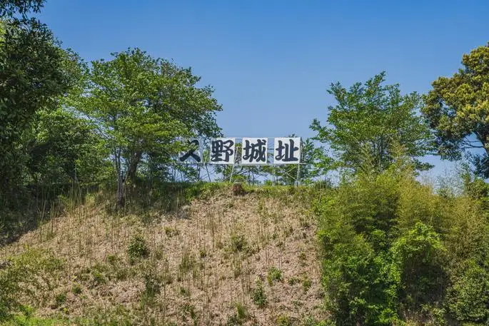
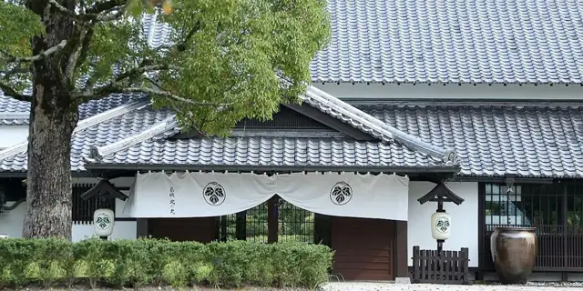
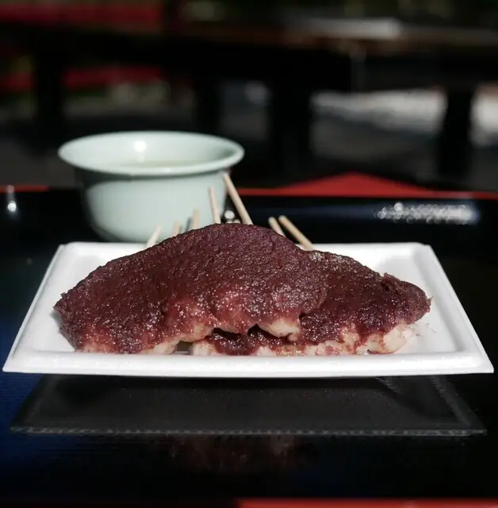
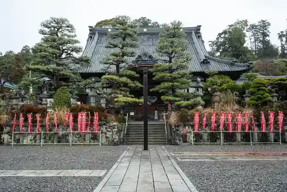
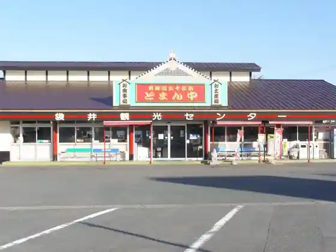

Japan / Shizuoka / Fukuroi
Fukuroi · Shizuoka
Fukuroi
Highlighted on the Shizuoka map.

Fukuroi City Hall




Sights · Things to do · Places to eat · Places to stay · Day-to-day services
Nearby in Shizuoka: ← Fujinomiya · Gotenba →
Other towns: Atami · Fuji · Fujieda · Fujinomiya · Gotenba · Hamamatsu · Higashiizu · Ito · Iwata · Izu · Izunokuni · Kakegawa · Kannami · Kawanehon · Kawazu · Kikugawa · Kosai · Makinohara · Matsuzaki · Minamiizu · Mishimashi · Moricho · Nagaizumi · Nishiizu · Numazu · Omaezaki · Oyamacho · Shimada · Shimizucho · Shimoda · Shizuoka · Susono · Yaizu · Yoshidacho
All towns in Shizuoka · Back to all prefectures